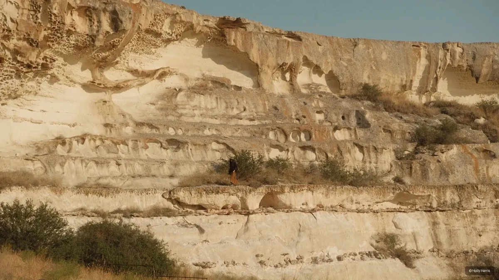
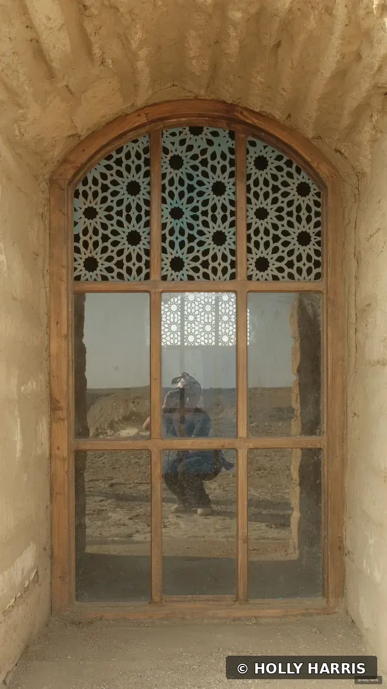
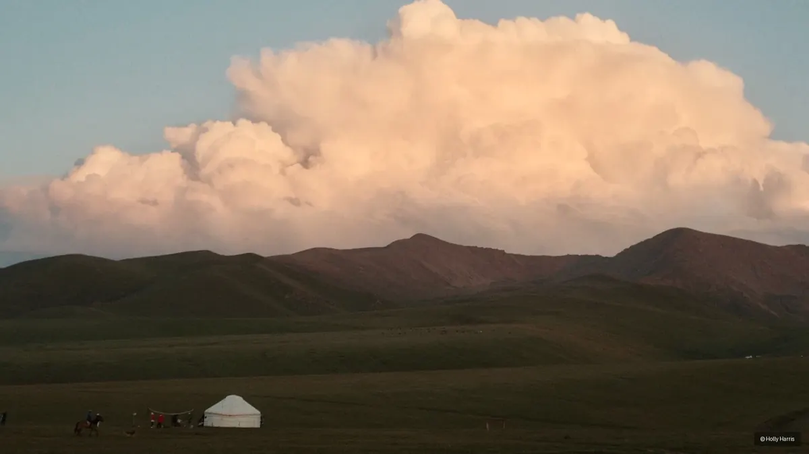
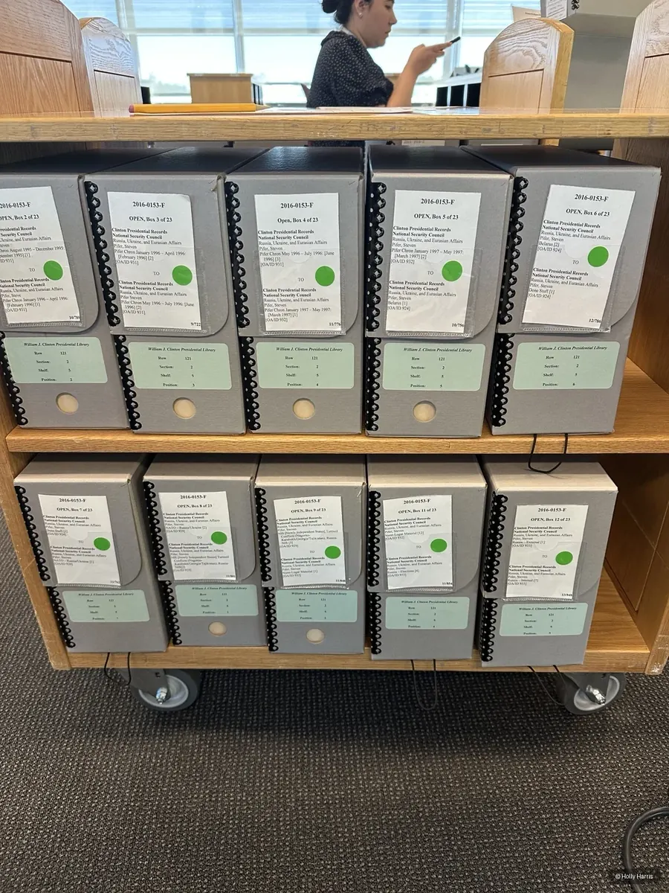

U.S.–Russia relations after 1991
Partnership, mistrust, diplomacy, and the political choices that shaped the post-Soviet relationship.
Historian · Researcher · Writer
I study how the United States and Russia tried to build a new security order in the 1990s—and why cooperation gave way to mistrust.
Historian of U.S.–Russia Relations & American Foreign Policy
Ph.D. Candidate · University Ph.D. Fellow · Southern Methodist University

About
I am a historian of U.S.–Russia relations and American foreign policy, with a particular focus on the political possibilities and failures of the 1990s.
My work asks how states use power, how international orders are constructed, and why cooperation breaks down. Those questions first emerged through research on an American airman held as a prisoner of war by Nazi Germany. Russian-language study and archival research later carried them into the post-Soviet era, where my dissertation examines U.S.–Russia relations, security cooperation, and competing visions of world order.
Outside the archive, I photograph cities and landscapes as another way of paying attention to place, memory, and political space.
Research
The 1990s were not simply an interval between the Cold War and renewed rivalry. They were a contested attempt to define partnership, sovereignty, economic reform, and the rules of international security.
My dissertation reconstructs that effort through diplomacy, economic assistance, security cooperation, and competing visions of political order. It asks how American and Russian officials imagined the relationship after the Soviet collapse, where their assumptions converged, and how disagreement hardened into mistrust.
For Media
Available for interviews, background conversations, podcasts, panels, and research inquiries.
Partnership, mistrust, diplomacy, and the political choices that shaped the post-Soviet relationship.
Primacy, intervention, economic assistance, security cooperation, and America’s changing role in the world.
Sovereignty, hierarchy, institutions, and competing visions of international cooperation.
American prisoners of war, military institutions, veterans, and the public memory of conflict.
Short biography
Holly Harris is a historian of U.S.–Russia relations and American foreign policy. A Ph.D. candidate and University Ph.D. Fellow at Southern Methodist University, she studies how Washington and Moscow attempted to construct a new international security order during the 1990s—and why cooperation gave way to mistrust.
CV
The main appointments, awards, publications, and research activity behind my work.
Southern Methodist University
Southern Methodist University
Texas Christian University
Clinton Foundation
American Councils
University of North Texas
United States Air Force Academy
Gilder Lehrman Institute of American History
Co-editor with Lindsay Chervinsky · University of Virginia Press
In The US Military and the Holocaust · Texas A&M University Press
Research leadership
Founder, Cold Warriors Research ClusterDedman College Interdisciplinary Institute · Southern Methodist University
Selected presentation
“Unfinished Order: Rebuilding Global Economic Governance with the Russian Federation”Society for Historians of American Foreign Relations · 2026
Photography
Selected photographs from cities, landscapes, archives, and research travel—a visual record alongside the written one.




Contact
Media · research · speaking
For interviews, research correspondence, speaking invitations, and academic collaboration:
hlharris@smu.edu